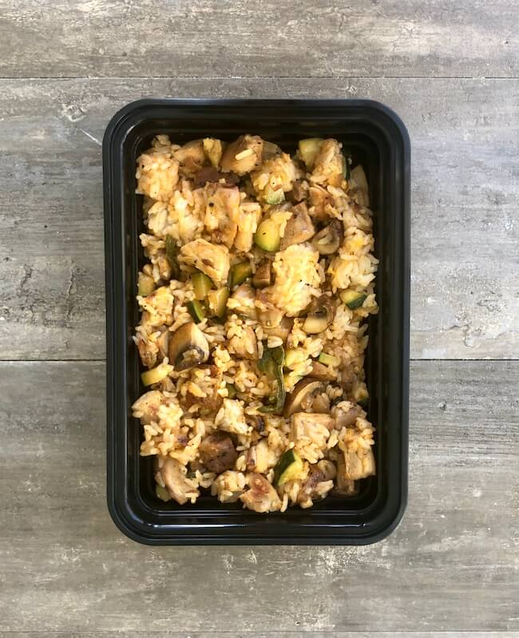

Buffalo Chicken Rice Bowls

Chicken thighs/breast, rice, mushrooms, zucchini, and onion cooked together and mixed with buffalo sauce and cheese.
One thing to note is that I can't try this recipe yet because I need a bigger pan alongside a select few items.
All credit goes to Josh Cortis
Ingredients
- 2 pounds boneless skinless chicken thighs
- 1 tbsp chili powder
- 2 tsp salt
- 1 tsp pepper
- 3 cups cooked rice
- 2 medium zucchini
- 8 oz mushrooms
- 1/2 medium onion
- 1/2 cup cheddar cheese shredded
- 2 tbsp olive oil
- 4 tbsp buffalo sauce
Instructions
For the Rice
- Cook enough rice to yield 3 cups of cooked rice. 1 cup of dry rice will make around 2-3 cups of cooked rice depending on what kind you use.
For the Chicken
- In a large bowl add the chicken, a bit of oil, chili powder, salt, and pepper, Toss to coat.
- You can cook your chicken however you like. I baked mine at 425 degrees F for 10 minutes and then broiled it on the top rack for 5 minutes to develop color. Cut into 1 inch pieces. If you would rather pan fry it follow the instructions in the next step.
- Heat a grill pan or a skillet over medium high heat and add some oil. Cook the chicken thighs for 4-5 minutes on each side. Cut them into a large dice and return to the pan to develop color.
For the Vegetables
- Wash and cut your zucchini into a small dice and mushrooms into a large dice. Cut the onion into a small dice.
- Heat a large skillet over medium high heat. Add oil and saute the onions for a couple of minutes
- Add a bit more oil and add in the mushrooms, season with salt to help bring out the water. Allow them to cook and develop color.
- Add in the zuchinni and cook until soft
- Measure out 3 cups of cooked rice and add to a large bowl. Mix in the chicken, vegetables, cheese, and buffalo sauce. Season with salt and pepper to taste.
Plating
- This recipe makes 5 servings Divide your ingredients evenly 5 ways.